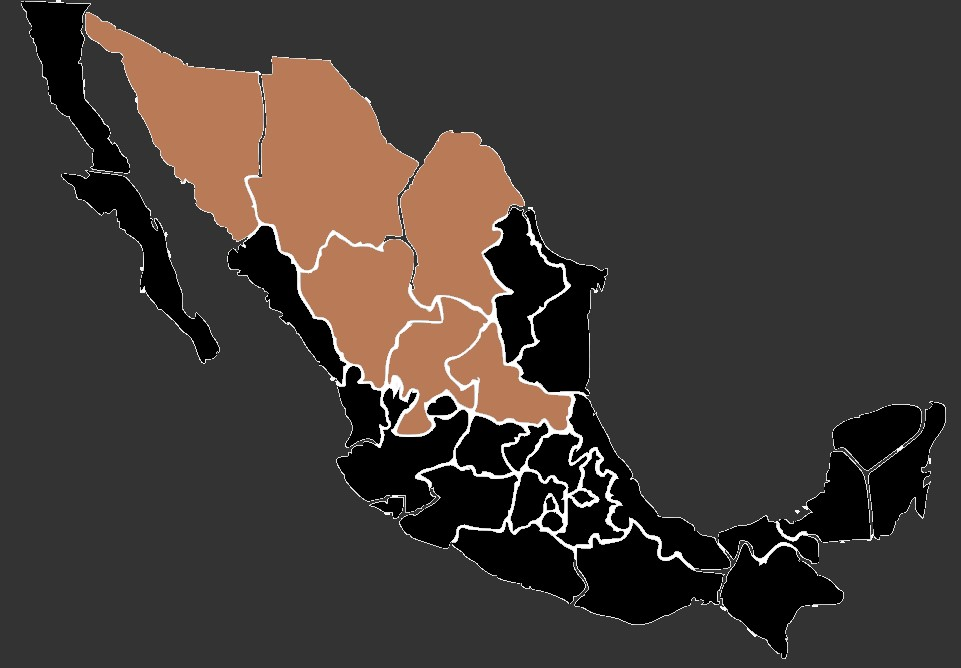

La langosta migratoria es un insecto fascinante que se caracteriza por su apariencia distintiva y su comportamiento migratorio.
Tamaño: La langosta migratoria es un insecto de tamaño considerable, pudiendo alcanzar longitudes de hasta 10 a 12 centímetros. Su cuerpo está dividido en tres partes: la cabeza, el tórax y el abdomen. Presenta seis patas robustas y dos pares de alas.
Color: Su coloración puede variar dependiendo de la etapa en la que se encuentre. Las langostas jóvenes tienden a ser más verdosas o marrones, mientras que los adultos adquieren tonalidades más amarillas o marrones. Su exoesqueleto es duro y está cubierto por un patrón de espinas y protuberancias.
Cabeza: La cabeza de la langosta migratoria es distintiva por sus ojos compuestos grandes y prominentes, antenas largas y robustas, y una boca poderosa adaptada para masticar vegetación. Sus mandíbulas fuertes les permiten alimentarse de una variedad de plantas.
Torax y Alas: El tórax alberga los músculos poderosos que permiten el movimiento de las patas y las alas. Las alas son membranosas y pueden ser cortas o largas, dependiendo de la edad y la especie. En reposo, las alas se pliegan sobre el abdomen, pero cuando están en vuelo se despliegan para permitirles volar largas distancias.
Tamaño: La langosta migratoria es un insecto de tamaño considerable, pudiendo alcanzar longitudes de hasta 10 a 12 centímetros. Su cuerpo está dividido en tres partes: la cabeza, el tórax y el abdomen. Presenta seis patas robustas y dos pares de alas.
Color: Su coloración puede variar dependiendo de la etapa en la que se encuentre. Las langostas jóvenes tienden a ser más verdosas o marrones, mientras que los adultos adquieren tonalidades más amarillas o marrones. Su exoesqueleto es duro y está cubierto por un patrón de espinas y protuberancias.
Cabeza: La cabeza de la langosta migratoria es distintiva por sus ojos compuestos grandes y prominentes, antenas largas y robustas, y una boca poderosa adaptada para masticar vegetación. Sus mandíbulas fuertes les permiten alimentarse de una variedad de plantas.
Torax y Alas: El tórax alberga los músculos poderosos que permiten el movimiento de las patas y las alas. Las alas son membranosas y pueden ser cortas o largas, dependiendo de la edad y la especie. En reposo, las alas se pliegan sobre el abdomen, pero cuando están en vuelo se despliegan para permitirles volar largas distancias.
Las langostas migratorias son conocidas por su capacidad de adaptación a diferentes ambientes, pero generalmente se encuentran en áreas semiáridas y praderas tropicales. Prefieren hábitats cálidos y secos, donde la vegetación herbácea es abundante. Estos insectos tienden a habitar zonas con pastizales extensos, áreas de matorral y regiones donde hay vegetación que les sirva de alimento.
En cuanto a su comportamiento, las langostas migratorias son reconocidas por su habilidad para formar enjambres y migrar en masa en busca de alimento. Cuando las condiciones ambientales, como la presencia de lluvias y vegetación fresca, son favorables, pueden reproducirse en grandes cantidades y provocar migraciones masivas en busca de comida.
En México, las langostas migratorias se pueden encontrar en diferentes estados, especialmente en regiones donde las condiciones climáticas son propicias para su desarrollo. Algunos de los estados mexicanos donde se ha registrado la presencia de langostas migratorias son Sonora, Chihuahua, Coahuila, Durango, Zacatecas y San Luis Potosí.
En cuanto a su comportamiento, las langostas migratorias son reconocidas por su habilidad para formar enjambres y migrar en masa en busca de alimento. Cuando las condiciones ambientales, como la presencia de lluvias y vegetación fresca, son favorables, pueden reproducirse en grandes cantidades y provocar migraciones masivas en busca de comida.
En México, las langostas migratorias se pueden encontrar en diferentes estados, especialmente en regiones donde las condiciones climáticas son propicias para su desarrollo. Algunos de los estados mexicanos donde se ha registrado la presencia de langostas migratorias son Sonora, Chihuahua, Coahuila, Durango, Zacatecas y San Luis Potosí.
 Las langostas migratorias son herbívoras y se alimentan principalmente de una variedad de plantas. Consumen una amplia gama de vegetación, incluyendo pastos, hojas, brotes tiernos, cultivos agrícolas y en ocasiones, arbustos y árboles jóvenes. Su dieta puede variar según la disponibilidad de alimentos en su entorno.
Estos insectos tienen una capacidad notable para consumir grandes cantidades de vegetación en poco tiempo, lo que puede causar daños significativos a los cultivos y a la vegetación natural si se produce una infestación masiva. La voracidad de las langostas migratorias puede llevarlas a moverse en busca de áreas con alimentos frescos, lo que desencadena sus migraciones en busca de nuevas fuentes de alimento.
Estos insectos tienen una capacidad notable para consumir grandes cantidades de vegetación en poco tiempo, lo que puede causar daños significativos a los cultivos y a la vegetación natural si se produce una infestación masiva. La voracidad de las langostas migratorias puede llevarlas a moverse en busca de áreas con alimentos frescos, lo que desencadena sus migraciones en busca de nuevas fuentes de alimento.
• Las langostas migratorias tienen la capacidad de formar enormes enjambres que pueden contener millones de individuos. Estos enjambres pueden cubrir grandes distancias durante sus migraciones.
• Experimentan cambios físicos significativos a lo largo de su vida. Pasan por distintas etapas, desde el huevo hasta la ninfa y finalmente el estado adulto. En cada etapa, su aspecto y comportamiento varían.
• Son reconocidas por sus migraciones masivas y pueden recorrer cientos de kilómetros en busca de alimento. Estos desplazamientos pueden tener un impacto significativo en la agricultura y el ecosistema local.
• Experimentan cambios físicos significativos a lo largo de su vida. Pasan por distintas etapas, desde el huevo hasta la ninfa y finalmente el estado adulto. En cada etapa, su aspecto y comportamiento varían.
• Son reconocidas por sus migraciones masivas y pueden recorrer cientos de kilómetros en busca de alimento. Estos desplazamientos pueden tener un impacto significativo en la agricultura y el ecosistema local.